전기철도기사 (2004-08-08 기출문제)
1과목: 전기철도공학
1. 직류 전류의 차단에 대한 설명으로 옳은 것은?
- 교류처럼 변하지 않으므로 차단이 용이하다.
- 전위차가 커야 차단이 용이하다.
- 전류가 커야 차단이 용이하다.
- 0 이 되는 순간이 없어 차단하기가 어렵다.
(정답률: 알수없음)

2. 단상 교류식 전기철도에서 3상 전원을 평형으로 얻기위해서 사용되는 방법은?
- 스코트 결선
- 역 V결선
- 리액터 설치
- 전력용콘덴서 설치
(정답률: 알수없음)
3. 급전선을 터널, 과선교 등에 시설할 때 레일면상의 높이는 몇 m 이상으로 하는가?
- 3
- 3.5
- 4
- 4.5
(정답률: 알수없음)
4. 커티너리 전차선을 접속할 때 더블이어의 최대 체결 토크는 몇 kgf.cm 이상이어야 하는가?
- 1000
- 1500
- 2000
- 2500
(정답률: 알수없음)
5. 전기차 팬터그래프에 의한 가공 전차선의 전기적 마모의 주된 원인은?
- 불완전 재질
- 불완전 전원
- 불완전 충격
- 불완전 접촉
(정답률: 알수없음)
6. 직류 전철구간에서 상·하선을 균압하기 위한 설비는?
- 섹션 포스트(SECTION POST)
- 타이 포스트(TIE POST)
- 에어 섹션(AIR SECTION)
- 정류 포스트(RECTIFYING POST)
(정답률: 알수없음)
7. 직류 T-Bar 방식 전차선로에서 강체 가선을 일정한 높이로 유지시키고 열차 운행시 진동이나 탈락 또는 변형이 되지 않게 지지해 주는 것은?
- 지지금물
- 롱이어
- 휘드이어
- 절연매립전
(정답률: 알수없음)
8. 보안기의 설치장소로 적당하지 못한 것은?
- BT구간 정거장의 구내 양쪽 흡상선이 설치된 가장 가까운 장소
- AT구간 정거장간에 설치된 보호선용 접속선으로부터 1㎞마다 설치
- AT구간 정거장의 구내 보호선용 접속선이 설치된 가장 가까운 장소
- BT구간 정거장간에는 흡상변압기의 1차측에 피뢰기와 함께 설치
(정답률: 알수없음)
9. 가공 전차선로에서 급전선에 사용하는 경알루미늄 연선의 안전율은 얼마 이상이어야 하는가?
- 2.2
- 2.5
- 3.0
- 3.5
(정답률: 알수없음)
10. 직류 강체전차선로(T-Bar방식)에서 사용하는 건널선이 아닌 것은?
- 교차건널선
- 편건널선
- X건널선
- Y건널선
(정답률: 알수없음)
11. 가공 전차선의 편위는 곡선반경 1600m 미만의 곡선로에서 몇 mm 를 표준으로 하고 있는가?
- 선로 내측 200mm
- 선로 외측 200mm
- 선로 내측 300mm
- 선로 외측 300mm
(정답률: 알수없음)
12. 전동차가 직선구간에서 곡선구간으로 진입하는 경우에 급격한 변화를 주지 않게 하는 곡선의 종류는?
- 완화곡선
- 단곡선
- 반향곡선
- 제한곡선
(정답률: 알수없음)
13. 교류 변전설비에서 BT방식에 대한 설명으로 옳은 것은?
- 권수비 1:1의 단권변압기를 설치하여 급전하는 방식
- 권수비 2:1의 단권변압기를 설치하여 급전하는 방식
- 권수비 1:1의 흡상변압기를 설치하여 급전하는 방식
- 권수비 2:1의 흡상변압기를 설치하여 급전하는 방식
(정답률: 알수없음)
14. 맥동전압의 평균값 E 에 해당되는 것은?
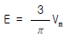
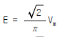
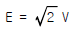
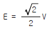
(정답률: 알수없음)
15. 교류 전기철도의 전차선로의 구성 중 귀선로에 속하지 않는 것은?
- 흡상선
- 부급전선
- 지락도선
- 귀선레일
(정답률: 알수없음)
16. 조가선이 갖추어야 할 조건이 아닌 것은?
- 높은 응력에 견디고 진동 피로강도가 클 것
- 내마모성이 클 것
- 도전률이 낮을 것
- 선팽창 계수가 적절할 것
(정답률: 알수없음)
17. 가공 전차선로에서 운전속도가 90km/h이고 파동전파속도가 110km/h일 때 전차선로의 동적 작용을 알 수 있는 도플러 계수 α 는 얼마인가?
- 0.1
- 0.2
- 0.3
- 0.4
(정답률: 알수없음)
18. 전식(電蝕:Electrolytic Corrosion)을 방지하는 방법 중 전철측의 시설에 대한 설명으로 옳지 않은 것은?
- 변전소간의 간격을 짧게 한다.
- 귀선의 극성을 정기적으로 바꾼다.
- 대지에 대한 레일의 절연저항을 작게 한다.
- 레일을 따라 보조귀선을 설치한다.
(정답률: 알수없음)
19. 전차선, 조가선 모두를 자동장력할 경우 전차선 110mm2의 허용장력을 1⑤0kg으로 하면 전차선의 표준장력은 몇 kg인가?
- 892.5
- 997.5
- 1020
- 11⑤
(정답률: 알수없음)
20. 대도시 교통수단으로 지하철도 교통수단의 좋은 점이 아닌 것은?
- 노면 교통을 방해하지 않는다.
- 고속으로 운전할 수 있으며 수송력이 크다.
- 환경 친화적인 교통수단이다.
- 지하에 건설되므로 건설비가 경제적이다.
(정답률: 알수없음)
2과목: 전기철도 구조물공학
21. 정정(靜定)보의 일단은 고정되었고, 다른 쪽 끝은 자유단인 보(Beam)는?
- 단순보
- 내민보
- 겔버보
- 캔틸레버보
(정답률: 알수없음)
22. 고온계 하중(고온계 표준 풍압하중)이라고 하며 여름철의 태풍을 기준으로 설계조건에 적용하는 하중은?
- 갑종 풍압하중
- 을종 풍압하중
- 병종 풍압하중
- 정종 풍압하중
(정답률: 알수없음)
23. 전철주의 경간이 50m, 선로의 곡선반지름이 500m, 전선의 장력이 1000kgf일 때 전선의 횡장력은 몇 kgf 인가?
- 10
- 25
- 100
- 250
(정답률: 알수없음)
24. 힘의 3요소는?
- 크기, 각도, 방향
- 크기, 방향, 작용점
- 크기, 방향, 합력
- 크기, 방향, 작용선
(정답률: 알수없음)
25. 전기철도 구조물에 외력이 작용했을 때 형태가 변하지 않는 경우, 이 구조물은 어떤 상태로 보는가?
- 내적 안정
- 내적 불안정
- 외적 안정
- 외적 불안정
(정답률: 알수없음)
26. 길이 L인 선분 AB를 x축(또는 y축) 중심으로 회전시킬 때 생기는 표면적을 구할 때 사용되는 정리는?
- Lami의 정리
- Pappus의 정리
- 베티의 정리
- 뉴톤의 정리
(정답률: 알수없음)
27. 변전소, 구분소 등에서 급전선, 부급전선 등을 인출하거나 지지하기 위하여 설비되는 고정 빔으로 산형강 또는 강관 등을 사용하는 구조의 빔(Beam)은?
- 스트럭처 빔
- 지지 빔
- 평면 빔
- 인류 빔
(정답률: 알수없음)
28. 가공 전차선로에 사용되는 현수애자의 안전률은 과전압 파괴하중에 대하여 얼마 이상이어야 하는가?
- 1.5
- 2.0
- 2.5
- 3.0
(정답률: 알수없음)
29. 특수개소인 3m 이상의 제방이나 교량 위의 경우에서는 전차선의 기울기를 계산할 때 이용되는 순간 풍속을 몇 m/s 로 하는가?
- 30
- 35
- 40
- 50
(정답률: 알수없음)
30. 가공 전차선로에서 지선의 하중이 전주에 작용하는 수평 하중에 대한 부담율은 몇 % 인가?
- 100
- 150
- 200
- 250
(정답률: 알수없음)
31. 전주 기초의 강도를 계산하는 경우에 고려하지 않아도 되는 것은?
- 형상
- 지형
- 전압
- 안전율
(정답률: 알수없음)
32. 가공 전차선로의 전철주와 조합하여 전차선, 급전선 등을 지지하기 위한 빔(beam) 중 가동식 빔에 해당되는 것은?
- 평면 빔
- 가동브래킷
- 사각 빔
- 스팬선식 빔
(정답률: 알수없음)
33. 가공 전차선로에는 별로 사용되지 않는 전철주는?
- 목주
- 철근콘크리트주
- 조합철주
- H형강주
(정답률: 알수없음)
34. 전기철도 구조물의 자재를 선정할 때의 필요 조건이 아닌것은?
- 중량이 무거울 것
- 기계적 강도가 클 것
- 내부식성이 좋을 것
- 진동에 따른 풀림 등이 없을 것
(정답률: 알수없음)
35. 전차선로용 강구조물 중 압축재로 사용되는 보조재는 그 세장비를 얼마 이하로 제한하고 있는가?
- 150
- 200
- 220
- 250
(정답률: 알수없음)
36. 을종풍압하중은 가선된 전선에 두께 6mm 이고, 비중이 얼마인 빙설이 부착한 상태로 갑종풍압하중의 1/2의 풍압에 의해 생기는 하중을 말하는가?
- 0.6
- 0.9
- 1.6
- 1.9
(정답률: 알수없음)
37. 응력계산에서 전선의 중량은 어떤 하중을 적용하는가?
- 수직분포하중
- 수직편심하중
- 수평분포하중
- 수평집중하중
(정답률: 알수없음)
38. 단면적이 1cm2이고 길이가 6m인 철선에 550kg의 하중을 가했을 때 0.4cm가 늘어났다고 하면 이 때의 종탄성계수는 몇 kg/cm2 인가?
- 5.36×105
- 6.24×105
- 8.25×105
- 9.27×105
(정답률: 알수없음)
39. 전주의 관리를 위하여 전주표에 11-30-A-6.5라고 표시할 때, 여기에서 6.5는 무엇을 의미하는가?
- 전주의 무게
- 전주의 길이
- 설계휨모멘트
- 전주의 인장력
(정답률: 알수없음)
40. 지선의 종류를 분류할 때, 사용 개소에 의한 분류에 속하지 않는 것은?
- 인류용 지선
- 진동방지용 지선
- 곡선당김용 지선
- 빔(Beam) 지선
(정답률: 알수없음)
3과목: 전기자기학
41. 어떤 대전체가 진공 중에서 전속이 Q[C]이었다. 이 대전체를 비유전률 10 인 유전체속으로 가져갈 경우에 전속은 어떻게 되는가?
- Q
- 10Q
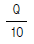
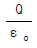
(정답률: 알수없음)
42. 다음 사항 중 옳은 것은?
- 지구 상공에는 대기가 전리되어 전자와 이온으로 구성된 전리층이 있는데 A층, B층, C층, D층, E층, F층 등이 있다.
- 지구상에서 전자파를 발사하면 파장이 긴 것일수록 전리층을 쉽게 벗어날 수가 있다.
- 장파는 주로 F층에서 반사되어 지구로 되돌아 온다.
- 송신 안테나에서 방사되는 전자파는 직접파, 대지 반사파, 산악 회절파, 전리층 반사파 등으로 수신 안테나에 이른다.
(정답률: 알수없음)
43. 전위 V= 3xy+z+4 일 때 전계 E 는?
- i 3x+j 3y+k
- -i 3y-j 3x-k
- i 3x-j 3y-k
- i 3y+j 3x+k
(정답률: 알수없음)
44. 그림과 같이 n개의 동일한 콘덴서 C를 직렬 접속하여 최하단의 한개와 병렬로 정전용량 Co의 정전전압계를 접속하였다. 이 정전전압계의 지시가 V일 때 측정전압 Vo는 몇 V 인가?
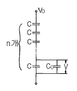
- nV
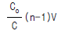
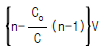
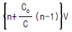
(정답률: 알수없음)
45. 코일로 감겨진 자기회로에서 철심의 투자율을 μ라 하고 회로의 길이를 ℓ이라 할 때 그 회로의 일부에 미소공극 ℓg를 만들면 회로의 자기저항은 처음의 몇 배가 되는가? (단, ℓ g≪ℓ 즉, ℓ -ℓ g≒ℓ 이다.)
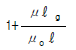
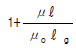
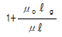
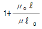
(정답률: 알수없음)
46. 막대자석 위쪽에 동축도체 원판을 놓고 회로의 한 끝은 원판의 주변에 접촉시켜 습동하도록 해 놓은 그림과 같은 파라데이 원판실험을 할 때 검류계에 전류가 흐르지 않는 경우는?
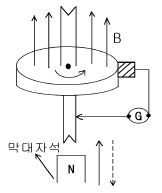
- 자석을 축 방향으로 전진시킨후 후퇴시킬 때
- 자석만을 일정한 방향으로 회전시킬 때
- 원판만을 일정한 방향으로 회전시킬 때
- 원판과 자석을 동시에 같은 방향, 같은 속도로 회전시킬 때
(정답률: 알수없음)
47. 전자의 비전하는 몇 C/kg 인가?
- -1.759×1011
- -2.759×1011
- -8.559×1011
- -9.559×1011
(정답률: 알수없음)
48. 파라데이법칙에서 회로와 쇄교하는 전자속수를 φ[Wb], 회로의 권회수를 N라 할 때 유도기전력 U 는 얼마인가?
- 2πμNφ
- 4πμNφ
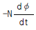
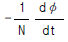
(정답률: 알수없음)
49. 1μA의 전류가 흐르고 있을 때, 1초동안 통과하는 전자수는 약 몇 개인가? (단, 전자 1개의 전하는 1.602×10-19C 이다.)
- 6.24×1010
- 6.24×1011
- 6.24×1012
- 6.24×1013
(정답률: 알수없음)
50. 서로 다른 두 유전체사이의 경계면에 전하분포가 없다면 경계면 양쪽에서의 전계 및 전속밀도는?
- 전계의 법선성분 및 전속밀도의 접선성분은 서로 같다.
- 전계의 접선성분 및 전속밀도의 법선성분은 서로 같다.
- 전계 및 전속밀도의 법선성분은 서로 같다.
- 전계 및 전속밀도의 접선성분은 서로 같다.
(정답률: 알수없음)
51. 그림과 같이 두께 ｄ, 내외반지름이 r1, r2 인 원환의 1/8이 되는 부채꼴 모양의 반지름 방향에 대한 저항은?(단, 원환의 재료 도전률을 σ라고 한다.)
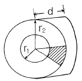
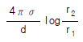
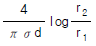
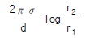
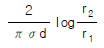
(정답률: 알수없음)
52. 자유공간에 있어서 포인팅 벡터를 S [W/m2]라 할 때 전장의 세기의 실효값 Ee[V/m]를 구하면?
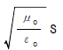
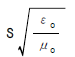
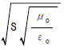
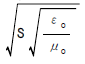
(정답률: 알수없음)
53. 그림과 같은 안반지름 7㎝, 바깥반지름 9㎝인 환상철심에 감긴 코일의 기자력이 500AT일 때, 이 환상철심 내단면의 중심부의 자계의 세기는 몇 AT/m 인가?
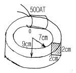
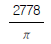
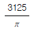
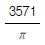
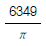
(정답률: 알수없음)
54. E =(i+j2+k3)[V/cm]로 표시되는 전계가 있다. 0.01μC의 전하를 원점으로부터 i3[m]로 움직이는데 필요한 일은 몇 Ｊ인가?
- 3×10-8
- 3×10-7
- 3×10-8
- 3×10-8
(정답률: 알수없음)
55. 공기 중에서 어느 거리를 두고 있는 두 점전하사이에 작용하는 힘이 1N이고, 두 점전하를 액체 유전체속에 넣었더니 0.4N으로 힘이 줄었다. 이 액체 유전체의 비유전률은 얼마인가?
- 0.1
- 0.4
- 2.5
- 6.25
(정답률: 알수없음)
56. 자기유도계수 L을 구하는 식이 아닌 것은?
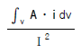
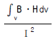
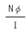
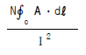
(정답률: 알수없음)
57. 진공 중에서 무한장 직선도체에 선전하밀도 ρL=2π×10-3 C/m가 균일하게 분포된 경우 직선도체에서 2m와 4m 떨어진 두 점사이의 전위차는 몇 V 인가?
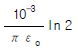
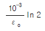
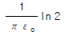
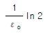
(정답률: 알수없음)
58. 플레밍(Flaming)의 왼손법칙을 나타내는 F - B - Ｉ 에서 F 는 무엇인가?
- 전동기 회전자의 도체의 운동방향을 나타낸다.
- 발전기 정류자의 도체의 운동방향을 나타낸다.
- 전동기 자극의 운동방향을 나타낸다.
- 발전기 전기자의 도체 운동방향을 나타낸다.
(정답률: 알수없음)
59. 내경이 2cm, 외경이 3cm인 동심 구 도체간에 고유저항이 1.884x102Ω.m인 저항물질로 채워져 있는 경우, 내외구간의 합성저항은 약 몇 Ω 이 되는가?
- 2.5
- 5
- 250
- 500
(정답률: 알수없음)
60. 자기회로와 전기회로의 대응 관계가 잘못된 것은?
- 투자율-도전도
- 자속밀도-전속밀도
- 퍼미언스-콘덕턴스
- 기자력-기전력
(정답률: 알수없음)
4과목: 전력공학
61. 발전기의 정상, 역상, 영상임피던스를 각각 Z1, Z2, Zo라 하고 A상의 무부하 기전력을 E a 라 할 때 A상 단자가 접지된 경우의 전류 Ｉa 는?
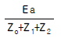
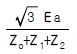
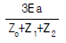
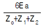
(정답률: 알수없음)
62. 용량 20kVA인 단상 주상변압기에 걸리는 하루의 부하가 20kW 14시간, 10kW 10시간일 때 하루동안의 손실은 몇 W 가 되는가? (단, 부하의 역률은 1로 가정하고, 변압기의 전부하동손은 300W, 철손은 100W이다.)
- 6850
- 7200
- 7350
- 7800
(정답률: 알수없음)
63. 3300V, △결선 비접지 배전선로에서 1선이 지락하면 전선로의 대지전압은 몇 V 까지 상승하는가?
- 4125
- 4950
- 5715
- 6600
(정답률: 알수없음)
64. 3상3선식 송전선에서 L을 작용인덕턴스라 하고 Lm 및 Le는 대지를 귀로로 하는 1선의 자기인덕턴스 및 상호인덕 턴스라고 할 때 이들 사이의 관계식은?
- L=Lm-Le
- L=Le-Lm
- L=Lm+Le
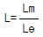
(정답률: 알수없음)
65. 전력용 피뢰기에서 직렬 갭(Gap)의 주된 사용 목적은?
- 방전내량을 크게 하고 장시간 사용하여도 열화를 적게 하기 위함이다.
- 충격방전개시전압을 높게 하기 위함이다.
- 상시는 누설전류를 방지하고 충격파 방전 종료후에는 속류를 즉시 차단하기 위함이다.
- 충격파가 침입할 때 대지에 흐르는 방전전류를 크게하여 제한전압을 낮게 하기 위함이다.
(정답률: 알수없음)
66. 그림과 같이 정수가 서로 같은 평행 2회선 송전선로의 4단자 정수 중 B 에 해당되는 것은?
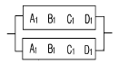
- 2B 1
- 4B 1
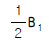
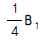
(정답률: 알수없음)
67. 단상 3선식에 사용되는 바란서(balancer)의 특성이 아닌것은?
- 여자 임피던스가 적다.
- 누설 임피던스가 적다.
- 권수비가 1:1 이다.
- 단권변압기이다.
(정답률: 알수없음)
68. 송전선로에 있어서 장경간(long span)이라고 하는 것은 표준경간에 몇 m를 더한 경간을 넘는 것을 말하는가?
- 100
- 150
- 200
- 250
(정답률: 알수없음)
69. 송전선로에 사용되는 애자의 특성이 나빠지는 원인으로 볼 수 없는 것은?
- 애자 각 부분의 열팽창의 상이
- 전선 상호간의 유도장애
- 누설전류에 의한 편열
- 시멘트의 화학팽창 및 동결팽창
(정답률: 알수없음)
70. 송전선에 복도체를 사용할 경우, 같은 단면적의 단도체를 사용하였을 경우와 비교할 때 옳지 않은 것은?
- 전선의 인덕턴스는 감소되고 정전용량은 증가된다.
- 고유 송전용량이 증대되고 정태안정도가 증대된다.
- 전선 표면의 전위경도가 증가한다.
- 전선의 코로나 개시전압이 높아진다.
(정답률: 알수없음)
71. 원자로의 주기란 무엇을 말하는 것인가?
- 원자로의 수명
- 원자로가 냉각정지상태에서 전출력을 내는데 까지의 시간
- 원자로가 임계에 도달하는 시간
- 중성자의 밀도(flux)가 ε= 2.718배 만큼 증가하는데 걸리는 시간
(정답률: 알수없음)
72. 100kVA 단상변압기 3대로 △결선하여 수용가에게 급전하던 중 변압기 1대가 고장이 발생하여 이를 제거하였다. 이 때 부하가 250kVA라면 나머지 두 대로 급전할 경우 변압기는 약 몇 % 의 과부하율로 운전되겠는가?
- 115
- 125
- 135
- 145
(정답률: 알수없음)
73. 증기압, 증기온도 및 진공도가 일정하다면 추기할 때는 추기치 않을 때보다 단위 발전량당 증기소비량과 연료소비량은 어떻게 변하는가?
- 증기소비량, 연료소비량 모두 감소한다.
- 증기소비량은 증가하고, 연료소비량은 감소한다.
- 증기소비량은 감소하고, 연료소비량은 증가한다.
- 증기소비량, 연료소비량 모두 증가한다.
(정답률: 알수없음)
74. 송전계통의 안정도 향상책으로 적당하지 않은 것은?
- 직렬콘덴서로 선로의 리액턴스를 보상한다.
- 기기의 리액턴스를 감소한다.
- 발전기의 단락비를 작게 한다.
- 계통을 연계한다.
(정답률: 알수없음)
75. 1대의 주상변압기에 역률(늦음) cosθ1, 유효전력 P1[kW]의 부하와 역률(늦음) cosθ2, 유효전력 P2[kW]의 부하가 병렬로 접속되어 있을 경우 주상변압기에 걸리는 피상전력은 몇 kVA 인가?
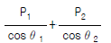
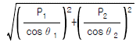
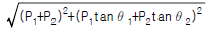
(정답률: 알수없음)
76. 콘덴서용 차단기의 정격전류는 콘덴서군 전류의 몇 % 이상의 것을 선정하는 것이 바람직한가?
- 120
- 130
- 140
- 150
(정답률: 알수없음)
77. 최근 154kV급 변전소에 주로 설치되는 차단기의 종류는?
- 자기차단기(MBB)
- 유입차단기(OCB)
- 기중차단기(ACB)
- SF6가스차단기(GCB)
(정답률: 알수없음)
78. 송전전력, 선간전압, 부하역률, 전력손실 및 송전거리를 동일하게 하였을 경우 3상3선식과 단상2선식의 총 전선량 (중량)비는 얼마인가?
- 0.75
- 0.87
- 0.94
- 1.15
(정답률: 알수없음)
79. 단선 고장시의 이상전압이 최저인 접지방식은?
- 직접 접지식
- 비접지식
- 고저항 접지식
- 소호리액터 접지식
(정답률: 알수없음)
80. 수차의 특유속도를 나타내는 식은? (단, N: 정격회전수[rpm], H: 유효낙차[m], P: 유효낙차 H[m]일 경우의 최대출력[kW]이라고 함)
(정답률: 알수없음)